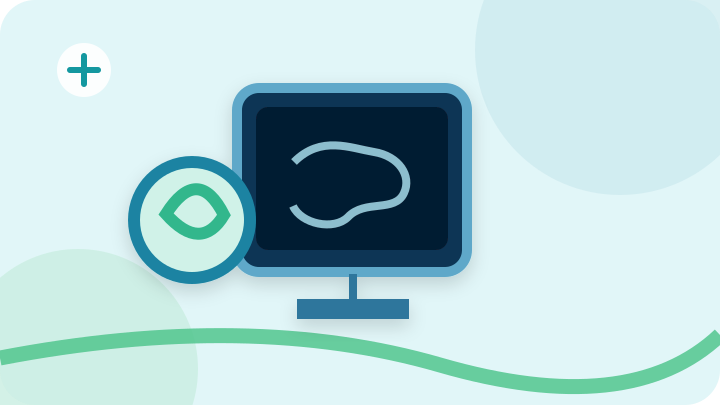

![رسم توضيحي: سونار البطن]()
معلومات طبية مبسطة
الأشعة التلفزيونية (السونار)
تصوير بالموجات فوق الصوتية لتقييم الأعضاء والأنسجة، دون استخدام الإشعاع المؤين.

عن هذه الخدمة
ما المقصود بـالأشعة التلفزيونية (السونار)؟
يستخدم السونار الموجات الصوتية للحصول على صور لأجزاء مختلفة من الجسم. يساعد الفحص الطبيب في تقييم البطن والحوض والأعضاء السطحية، ويُختار نوعه تبعًا للسؤال الطبي.
![رسم توضيحي: سونار الحوض]()
![رسم توضيحي: سونار الكلى والمسالك البولية]()
سونار الكلى والمسالك البولية
تقييم الكلى والمثانة وبعض التغيرات مثل توسع مجرى البول أو الحصوات.
معلومات وتحضيرات الفحص![رسم توضيحي: سونار الغدة الدرقية]()
![رسم توضيحي: سونار الثدي]()
سونار الثدي
فحص بالموجات فوق الصوتية لتقييم كتل أو أعراض في الثدي بحسب عمر المريضة والحالة.
معلومات وتحضيرات الفحص![رسم توضيحي: سونار الخصيتين]()
![رسم توضيحي: سونار الأنسجة الرخوة]()
تنبيه مهم
هذه المعلومات للتثقيف فقط، ولا تُعد توصية بإجراء الفحص أو تشخيصًا. تختلف متطلبات التحضير والتوفر وفق حالة المريض وتوجيه الطبيب. يُرجى الاتصال قبل الحضور للتأكد من الخدمة.
التواصل مع العيادة
هل لديك استفسار عن الفحص؟
السبت إلى الخميس · 8 صباحًا – 10 مساءً · الجمعة إجازة
صنعاء – شارع الزبيري – برج المختبرات الدولية